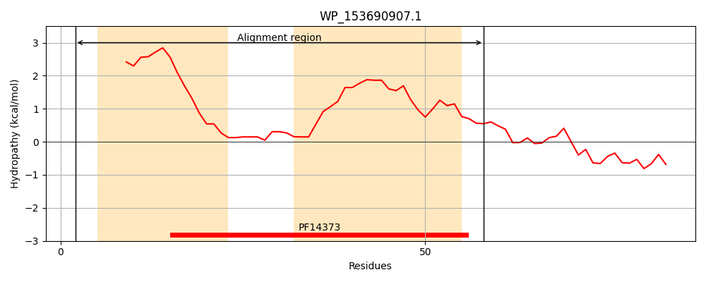
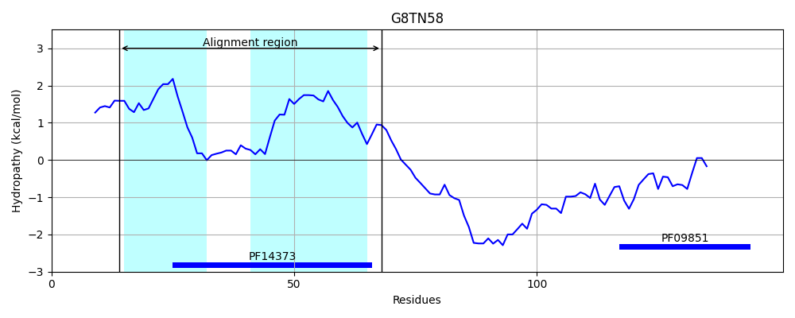
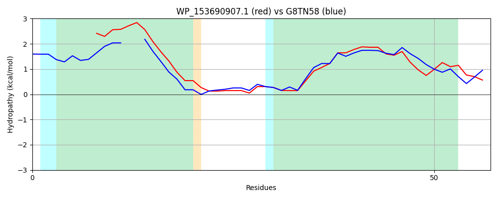

Hit Accession: G8TN58
Hit TCID: 1.E.9.1.6
Hit Description: gnl|BL_ORD_ID|4871 gnl|TC-DB|G8TN58|1.E.9.1.6 Immunity protein, putative OS=Niastella koreensis (strain DSM 17620 / KACC 11465 / GR20-10) GN=Niako_1372 PE=4 SV=1
Mach Len: 57
e:0.000000
Query TMS Count : 2
Hit TMS Count: 2
TMS-Overlap Score: 1.900000
Predicted Substrates:None
BLAST Alignment:
| Protein Hydropathy Plots: | |
|---|---|
|  |  |
Pairwise Alignment-Hydropathy Plot: | |
|  | |